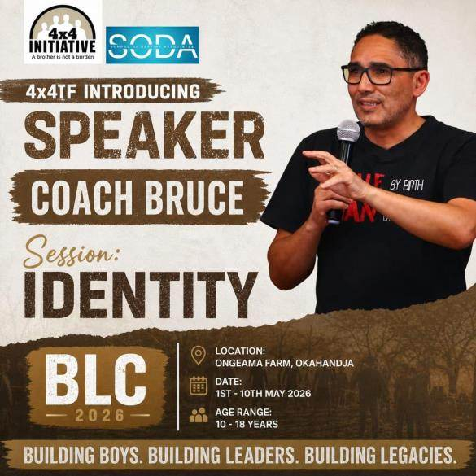
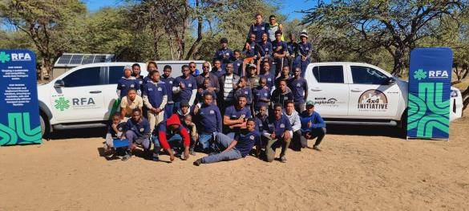
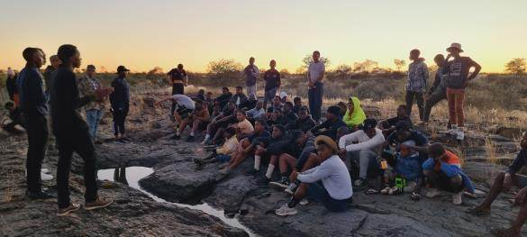
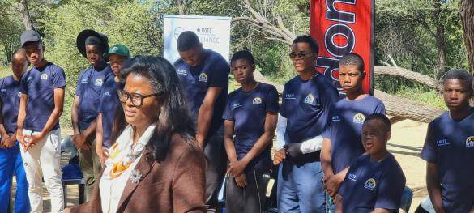
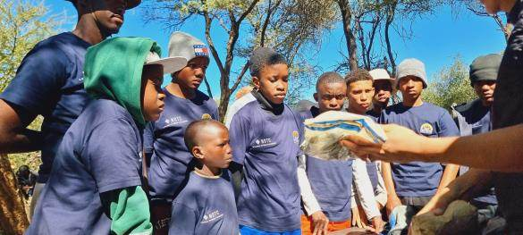
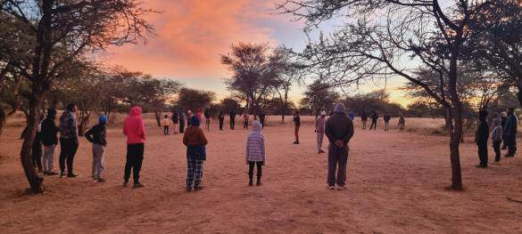
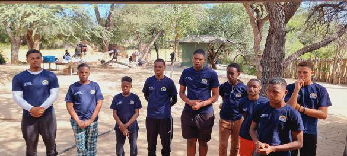
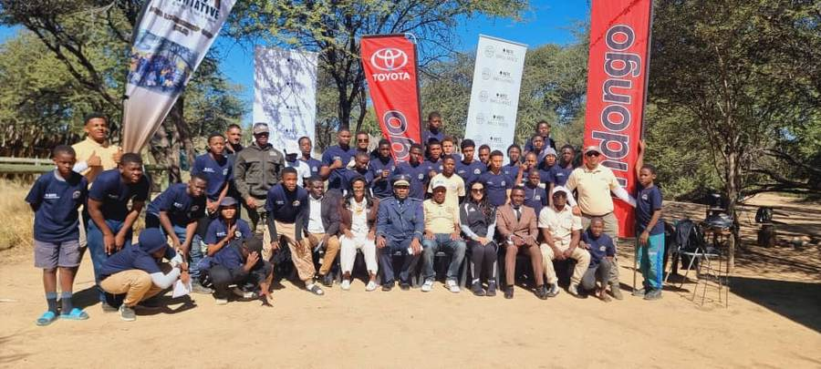
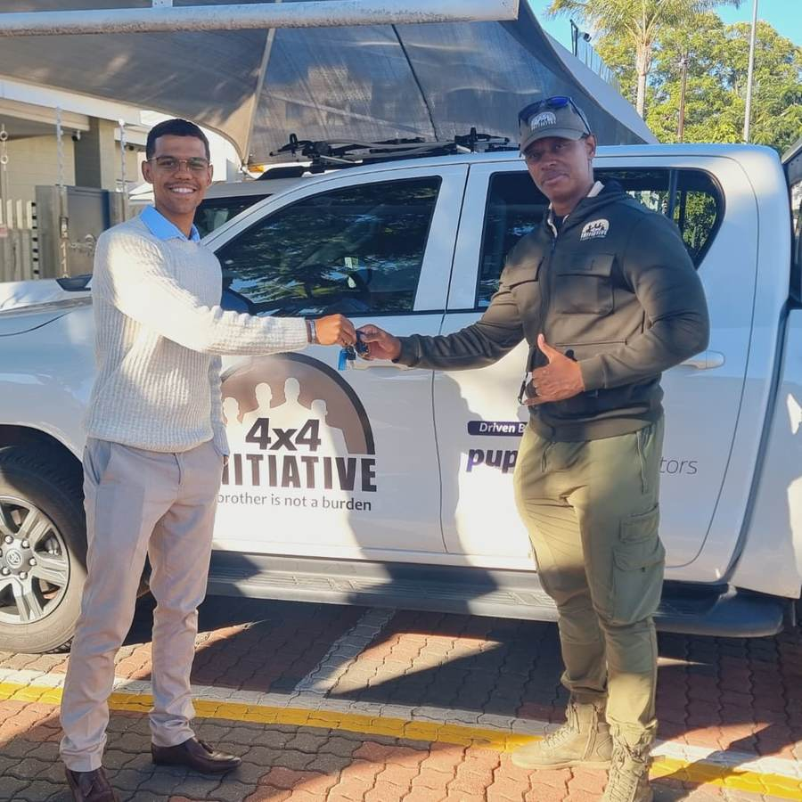
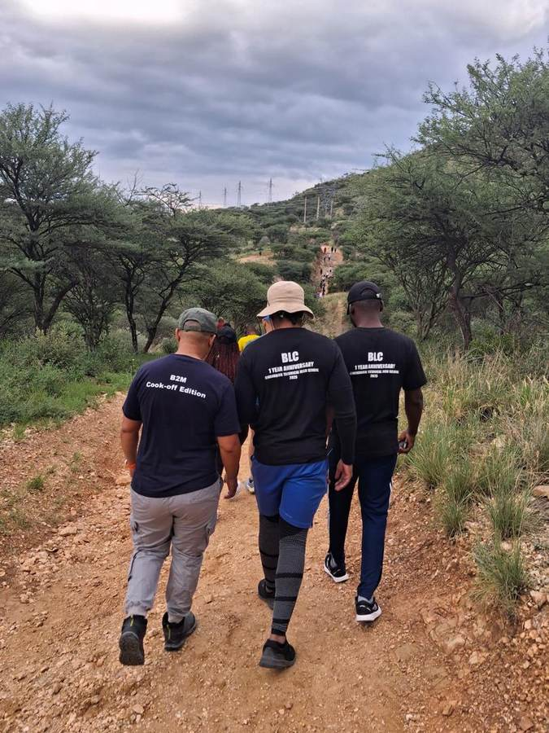

School Projects
Camp ends after ten days. School doesn't. This is where the 4x4 value system gets carried back into classrooms, hallways, and everyday routines, at 11 high schools and counting.
What the camp forms
The Boys Leadership Camp is a structured formation environment where boys are guided to think about conduct, responsibility, self-government, respect, choices, and service.
Apply, Change, Teach
- AApplyWhat they learn at camp, boys are challenged to put into practice at home.
- CChangeWhat must be corrected: habits, attitude, and choices.
- TTeachOthers who were not present, so the value system multiplies.
Assertiveness, Boundaries, Choices
- AAssertivenessTheir yes must be their yes, their no must be their no.
- BBoundariesBoys learn to set and respect limits, for themselves and others.
- CChoicesValues shape better choices, long after the camp gates close.
Boys Leadership Camp at Ongeama Farm
Building Boys, Building Leaders, Building Legacies: ten days that stretched from sunrise formation circles to institutional coaching sessions.










Institutional presentations
The camp was strengthened by presentations from partner institutions and guest coaches who brought specialised knowledge into the formation space.
| Institution / Partner | Topic Covered |
|---|---|
| Fatherhood Foundation | Alignment & Identity |
| Roads Fund Administration (RFA) | Career Guidance |
| Ministry of Health and Social Services | Psychological Coaching |
| NamPol | Drugs and Substance Abuse |
| Bible Society | Parental Coaching |
Beyond the camp gates
After camp, participants carry the 4x4 value system back into their school environments.
Boys Leadership Clubs
Graduates of the camp establish Boys Leadership Clubs at their respective schools, carrying discipline, brotherhood and responsibility to boys who never made it to Ongeama Farm.
Drop-a-PAD Project
Boys Leadership Clubs are connected to the Drop-a-PAD Project, introducing boys to menstruation and its importance, not as embarrassment, but as part of healthy masculinity. It prepares boys to become better brothers, future husbands, and future fathers to girls.
Small habits, said out loud
"Speak 5 lines to myself every morning."
A daily commitment: positive words, spoken deliberately, as a form of self-worth practiced like a discipline.
"There's no such thing as a stupid question. To acquire knowledge, ask."
Camp culture built around curiosity, not fear of getting it wrong.
What it looks like at school level

